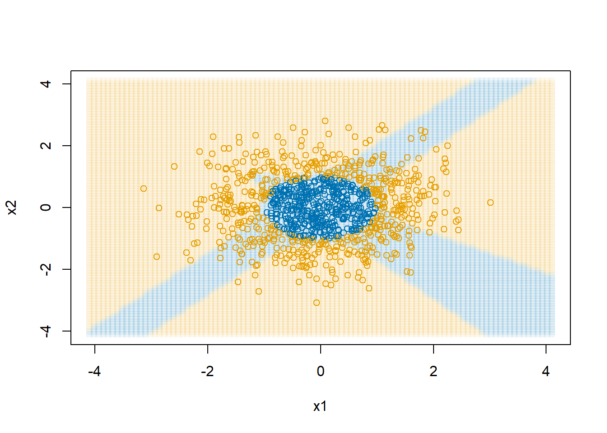
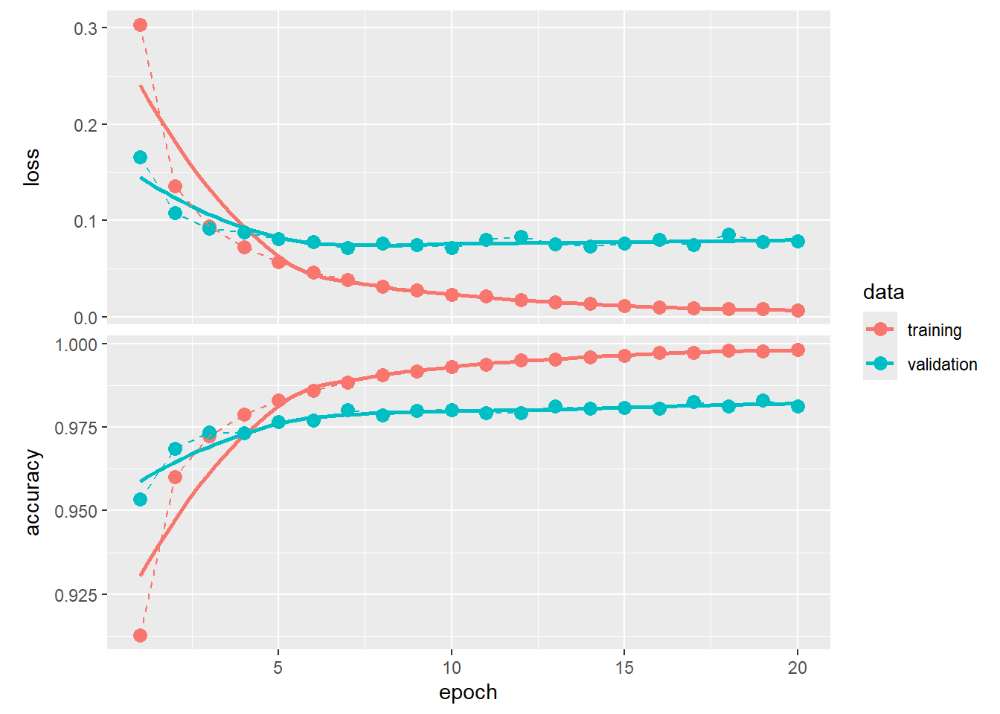
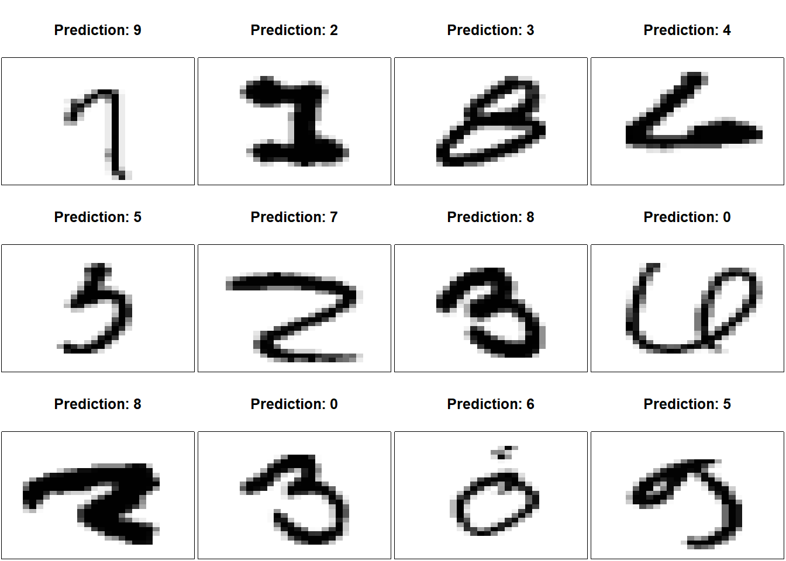
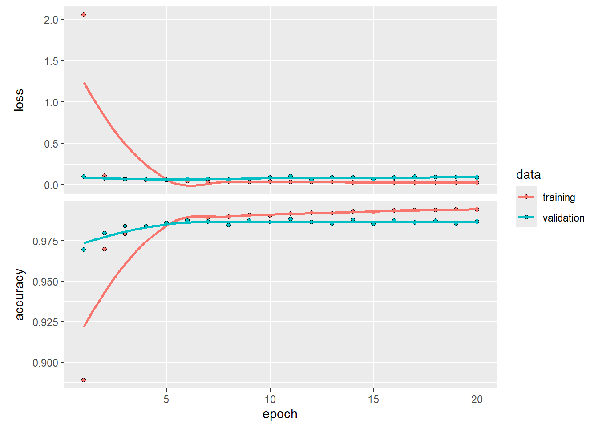
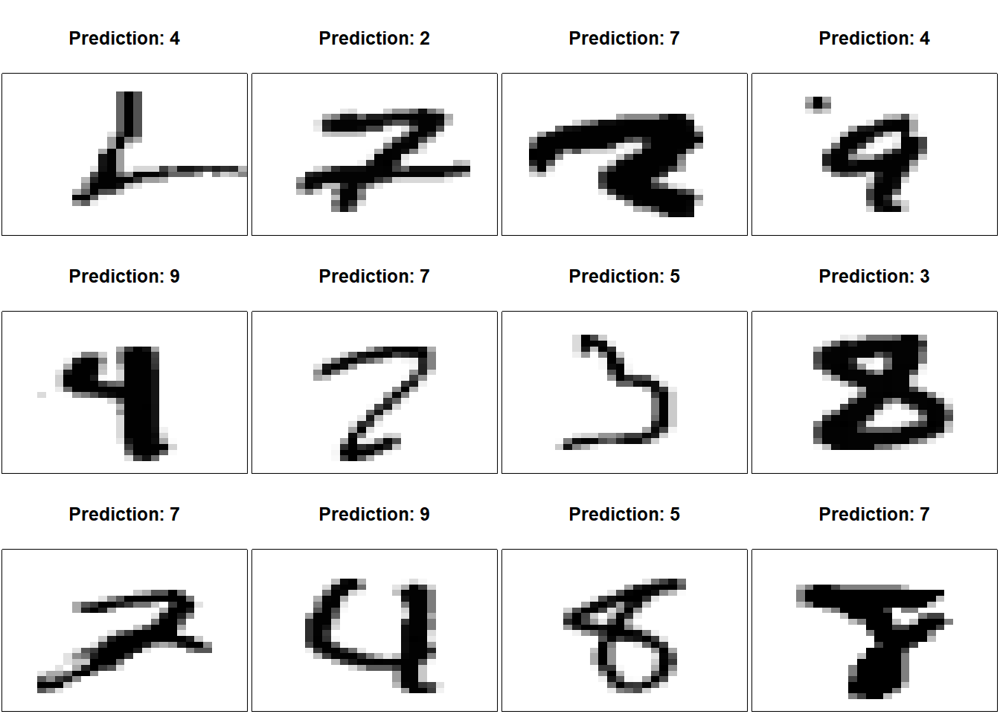

L10 Neural networks
1 Reading
Read Hastie, Tibshirani, and Friedman (2001) Chapter 11.
Read James et al. (2021) Chapter 10.
Read Y. LeCun, Y. Bengio, and G. Hinton (2015). “Deep learning,” Nature 521, 436–444.
2 A simple neural network
Consider a simple neural network that has two inputs \(x_1\) and \(x_2\) that enter a linear transformation, which outputs a prediction. Let’s further assume that we wish to minimize squared error, \(J(\mathbf{y},\mathbf{\hat y})=\sum (y_i-\hat y_i)^2\). This is the same as ordinary least squares, but I introduce it with a neural network framework to move gradually into more complex neural networks. So, the structure of this model is
We start with some guess for \(\hat\beta\), perhaps \((0,0,0)\). Then, once we pass our data through the neural network, we get predicted values and learn the magnitude of our error by computing \(\sum (y_i-\hat y_i)^2\). Now we can improve our guess for \(\hat\beta\) by computing the gradient of \(J\) with respect to \(\beta\). We will chain rule our way to figure out the gradient.
\[ \begin{split} \frac{\partial J}{\partial\hat y_i} &= -2(y_i-\hat y_i) \\ \frac{\partial\hat y_i}{\partial \beta_0} &= 1 \\ \frac{\partial\hat y_i}{\partial \beta_1} &= x_{i1} \\ \frac{\partial\hat y_i}{\partial \beta_2} &= x_{i2} \\ \frac{\partial J}{\partial \beta_0} &= \frac{\partial J}{\partial\hat y_1}\frac{\partial\hat y_1}{\partial \beta_0} + \ldots + \frac{\partial J}{\partial\hat y_n}\frac{\partial\hat y_n}{\partial \beta_0} \\ &= -2(y_1-\hat y_1)(1) + \ldots + -2(y_n-\hat y_n)(1) \\ &= -2\sum(y_i-\hat y_i) \end{split} \]
So, to reduce the loss function \(J\) we need to adjust \(\hat\beta_0\) as \[ \hat\beta_0 \leftarrow \hat\beta_0 - \lambda\left(-2\sum(y_i-\hat y_i)\right) \] where \(\lambda\) is the “learning rate.” Similarly for \(\hat\beta_1\) and \(\hat\beta_2\) \[ \begin{split} \frac{\partial J}{\partial \beta_1} &= \frac{\partial J}{\partial\hat y_1}\frac{\partial\hat y_1}{\partial \beta_1} + \ldots + \frac{\partial J}{\partial\hat y_n}\frac{\partial\hat y_n}{\partial \beta_1} \\ &= -2(y_1-\hat y_1)x_{11} + \ldots + -2(y_n-\hat y_n)x_{n1} \\ &= -2\sum(y_i-\hat y_i)x_{i1} \\ \frac{\partial J}{\partial \beta_2} &= -2\sum(y_i-\hat y_i)x_{i2} \end{split} \] Putting this all together, an algorithm for optimizing this simple neural network would be \[ \begin{split} \begin{bmatrix} \hat\beta_0 \\ \hat\beta_1 \\ \hat\beta_2\end{bmatrix} &\leftarrow \begin{bmatrix} \hat\beta_0 \\ \hat\beta_1 \\ \hat\beta_2\end{bmatrix} - \lambda \begin{bmatrix} -2\sum(y_i-\hat y_i) \\ -2\sum(y_i-\hat y_i)x_{i1} \\ -2\sum(y_i-\hat y_i)x_{i2}\end{bmatrix} \\ \hat\beta &\leftarrow \hat\beta + \lambda \mathbf{X}'(\mathbf{y}-\mathbf{\hat y}) \end{split} \] where in the last line the \(\lambda\) absorbed the \(2\).

4 Example in two-dimensions
We are going to be using the sigmoid a lot, so I am going to go ahead and make a helper function.
sigmoid <- function(x) {1/(1+exp(-x))}Let’s generate a dataset with a non-linear boundary, one for which a logistic regression model would not be ideal.
set.seed(20240402)
d <- data.frame(x0=1,
x1=rnorm(1000),
x2=rnorm(1000))
d$y <- as.numeric(d$x2 > 2*(sigmoid(4*d$x1)-0.5))
# show class separation
plot(d$x1, d$x2, col=col1and2[d$y+1],
xlab="x1", ylab="x2")We will use the algorithm we developed earlier to fit a “single-layer perceptron” model, like the one shown in Figure 1.
# set some starting values
beta <- c(0,-1,0)
learnRate <- 0.0001
X <- as.matrix(d[,c("x0","x1","x2")])
par(mfrow=c(2,3))
for(i in 1:100)
{
yPred <- as.matrix(d[,1:3]) %*% beta |> as.numeric()
beta <- beta + learnRate*(t(X) %*% (d$y-yPred))
if(i %in% c(1,2,5,10,50,100))
{
plot(d$x1, d$x2, col=col1and2[(yPred>0.5) + 1],
xlab="x1", ylab="x2",
main=paste("Iteration:",i))
lines(seq(-3,3,length.out=100),
2*(sigmoid(4*seq(-3,3,length.out=100))-0.5))
}
}In Figure 5, the black curve shows the optimal decision boundary. The blue and orange points show the predicted values. The decision boundary is as best as you can get with a linear model. With a single-layer perceptron in which all relationships are linear, this is the best we can do.
5 A more complex decision boundary in two dimensions
5.1 Searching for a linear boundary
Let’s consider a new decision boundary with which a linear neural network will really struggle.
d$y <- with(d, as.numeric(x1^2+x2^2 > 1))
plot(d$x1, d$x2, col=col1and2[d$y+1],
xlab="x1", ylab="x2")
And let’s again try the same algorithm
# learning algorithm for a single-layer perceptron
beta <- c(0,-1,0)
learnRate <- 0.0001
yPred <- as.matrix(d[,1:3]) %*% beta |> as.numeric()
X <- as.matrix(d[,c("x0","x1","x2")])
par(mfrow=c(2,3))
for(i in 1:50)
{
yPred <- as.matrix(d[,1:3]) %*% beta |> as.numeric()
beta <- beta + learnRate*(t(X) %*% (d$y-yPred))
if(i %in% c(1,20,25,30,40,50))
{
plot(d$x1, d$x2, col=col1and2[(yPred>0.5) + 1],
xlab="x1", ylab="x2",
main=paste("Iteration:",i))
lines(cos(seq(0,2*pi,length.out=100)),
sin(seq(0,2*pi,length.out=100)))
}
}The mean of y for this simulation is 0.583. The final estimate of \(\beta\) is 0.5800297, 0.0052191, 9.2792344^{-4}. In the end, the linear restrictions we have put on the neural network makes it abandon trying to separate the blue and the orange and just predicts all points to be in the majority class, orange.
6 R’s neuralnet package
Now that we have explored fitting a neural network “by hand,” in this section we will cover using existing software to fit neural networks.
First, we will walk through using the neuralnet package. There is also a nnet package, but it allows only one hidden layer. The neuralnet package simply allows for more flexibility. After that, we will experiment with Keras, a professional grade neural network system regularly used in scientific analyses.
Start by loading the neuralnet package and revisiting our circular decision boundary dataset.
library(neuralnet)
# our circular decision boundary
plot(d$x1, d$x2, col=col1and2[d$y+1],
xlab="x1", ylab="x2")Now we will fit a neural net with a single hidden layer with four nodes using squared error loss and the sigmoid activation function.
nn1 <- neuralnet(y ~ x1+x2,
data=d,
hidden=4,
linear.output = FALSE, # apply sigmoid to output
stepmax = 1000000,
err.fct="sse", # squared error
act.fct="logistic", # sigmoid
lifesign="minimal") # how much detail to printhidden: 4 thresh: 0.01 rep: 1/1 steps: 176764 error: 0.04531 time: 1.85 minsThe plot function will draw the network graph for us with the coefficients on all of the edges.
plot(nn1,
show.weights = TRUE,
information = FALSE,
col.entry.synapse = col2,
col.out.synapse = col2,
col.hidden = col1,
col.hidden.synapse = "black",
fill = col1,
rep="best") # "best" request plot of single best, rather than allneuralnet()
Create a plot to show the decision boundary.
dAll <- expand.grid(x1=seq(-4.1,4.1,length.out=100),
x2=seq(-4.1,4.1,length.out=100))
dAll$y <- 0
dAll$y_pred <- predict(nn1, newdata = dAll)
plot(dAll$x1, dAll$x2, col=col1and2transparent[dAll$y_pred + 1],
xlab="x1", ylab="x2", pch=15)
points(d$x1, d$x2, col=col1and2[(d$y>0.5) + 1])

neuralnet package with four hidden nodes
7 Tensorflow and Keras
Tensorflow is a Google product for efficient machine learning. It allows for computation with GPUs, but current GPU functionality on Windows is broken and removed. Keras is a set of Python tools for communicating what neural network structure you want. It then translates that structure into a neural network model that can be fit with Tensorflow (or with PyTorch, Facebook AI group’s Python tools for machine learning). I encourage you to read the documentation and explore demos available for all of these tools.
A lot of the scientific community using deep learning works in Python. For that reason, you will find a lot of Python resources for developing neural networks. Since most social science research is conducted in R, I focused on R for this course. We will still use the R Keras library, which hooks into Python, which hooks into Keras, which hooks into Tensorflow. With all of your variations in computers, operating systems, and settings there is a lot of opportunity for some settings, versions, and options to not be compatible. I will have limited ability to troubleshoot why Keras, Tensorflow, or Python is giving you errors. In this case you will have to learn how to learn to figure these things out.
For the most serious deep learning analysis, that work is done directly in Tensorflow. So, if you really want to learn this area well, start with Keras and then start digging into working with Tensorflow (or PyTorch).
Tensorflow and Keras are usually behind a version or two of Python. Python 3.13 is the current version, but Keras/Tensorflow support up to Python 3.12. This constantly changes. I will be using Python 3.11, because I know it works.
7.1 Tensorflow Playground
Visit the (Tensorflow Playground)[https://playground.tensorflow.org]. This let’s you freely experiment with datasets with different shapes for their classification boundaries, change the number of hidden layers and the number of nodes in each layer, and see the effect on the network’s ability to learn the decision boundary.
Challenge: Using only \(X_1\) and \(X_2\) as inputs, can you alter the number of the hidden layers and nodes that will successful learn the spiral pattern?
7.2 Installing Tensorflow and Keras
First, we will do a one-time installation.
install.packages("keras")
library(keras)
# March 2024, Keras works with 3.12... sticking with 3.11 for now
install_keras(python_version="3.11") You will need to restart R one last time after this installation.
Now we can get busy with Keras by loading the library. If all is installed correctly, then this line will run with no errors.
library(keras)7.3 MNIST postal digits data
We are going to experiment with the NIST postal digits data (MNIST database). Why? Because it seems to be a rite of passage for anyone working on neural networks. Everyone has to run the MNIST problem at some point. It is a set of 60,000 28x28 grayscale images handwritten digits. There is also a test set of 10,000 images. The Keras library comes with the MNIST database. We can load the dataset and print out one of the images.
numData <- dataset_mnist()
xTrain <- numData$train$x
yTrain <- numData$train$y
xTest <- numData$test$x
yTest <- numData$test$y
i <- 3
img <- t(apply(xTrain[i,,], 2, rev))
image(1:28, 1:28, img,
col = gray((255:0) / 255),
axes = FALSE,
xlab="",ylab="",
main=yTrain[i])That gives us a rough image of a handwritten number 4. Let’s take a look at a number of other handwritten digits to get an idea of what these images look like.
par(mfrow=c(5,5), mai=0.02+c(0,0,0.5,0))
for(i in 1:25+25)
{
img <- t(apply(xTrain[i,,], 2, rev))
image(1:28, 1:28, img,
col = gray((255:0) / 255),
xaxt = 'n', yaxt = 'n',
xlab="",ylab="",
mar=c(0,0,4,0)+0.01,
main=yTrain[i])
}We need to do a little restructuring of the dataset. Much like we did with the emoji data, we are going to stretch these data out wide, but we need to pay attention to how R stores array data.
I am going to make a little array with three “images.” The first image will have the numbers 1 to 4, the second 5 to 8, and the third 9 to 12.
a <- array(NA, dim=c(3,2,2))
a[1,,] <- matrix(1:4, ncol=2,byrow=TRUE)
a[2,,] <- matrix(5:8, ncol=2,byrow=TRUE)
a[3,,] <- matrix(9:12,ncol=2,byrow=TRUE)
a, , 1
[,1] [,2]
[1,] 1 3
[2,] 5 7
[3,] 9 11
, , 2
[,1] [,2]
[1,] 2 4
[2,] 6 8
[3,] 10 12When we print out a three dimensional array in R, it prints it out so that the last index changes the “fastest.” It first shows a[,,1] and then a[,,2]. To work with Keras, when we stretch the array out wide we need to put the array in “C” format in which the last index changes the fastest.
array_reshape(a, c(3, 2*2), order="C") # C = last index changes fastest [,1] [,2] [,3] [,4]
[1,] 1 2 3 4
[2,] 5 6 7 8
[3,] 9 10 11 12Now we can apply this reformatting to our MNISt data.
dim(xTrain)[1] 60000 28 28xTrain <- array_reshape(xTrain, c(60000, 28*28)) / 255
xTest <- array_reshape(xTest, c(10000, 28*28)) / 255We also need to convert our outcome values to be 0/1 indicators. So, rather than the outcome being “4,” we are going to create a vector with 10 numbers, all which are 0 except for the fourth one, which we will set to 1.
# converts outcome to 0/1 coding
yTrain <- to_categorical(yTrain)
yTest <- to_categorical(yTest)Now we will set up the neural network, describing our input data, the number of nodes in the hidden layer (512), setting the activation function (ReLU), and insist that the output predictions sum to one (softmax) so that we have a probability for each number of each image.
keras1 <- keras_model_sequential(input_shape = 28*28) |>
# 512 hidden nodes
layer_dense(units = 512, activation = "relu") |>
# randomly set 20% of nodes to 0, supposedly reduces overfitting
layer_dropout(0.2) |>
# softmax makes sure outputs sum to 1
layer_dense(units = 10, activation = "softmax") We can ask Keras to describe the model we are about to fit.
summary(keras1)Model: "sequential"
________________________________________________________________________________
Layer (type) Output Shape Param #
================================================================================
dense_1 (Dense) (None, 512) 401920
dropout (Dropout) (None, 512) 0
dense (Dense) (None, 10) 5130
================================================================================
Total params: 407050 (1.55 MB)
Trainable params: 407050 (1.55 MB)
Non-trainable params: 0 (0.00 Byte)
________________________________________________________________________________Then we tell Keras about how we want it to optimize the model and evaluate its performance. rmsprop is Root Mean Square Propagation. It is a popular variant of backpropagation that regularly adjusts the learning rate parameter. Categorical cross-entropy is the multinomial generalization of the negative Bernoulli log likelihood. We can also have Keras track other metrics, like here I ask it to track accuracy.
compile(keras1,
optimizer = "rmsprop",
loss = "categorical_crossentropy",
metrics = "accuracy")Ready to go! It’s now time to tell Keras to actually fit the model. The batch_size is the number of training observations used in one forward and backward pass through the neural network. This is called “mini-batch gradient descent.” epochs is the number of full passes through the dataset. Since there are 60,000 images, and we are using 80% of them for training and 20% for validation, and we have a batch size of 128, you will see each epoch require 375 (= 60000*0.8/128) updates within each epoch.
fitHx <- fit(keras1,
xTrain,
yTrain,
epochs = 20,
batch_size = 128,
validation_split = 0.2
)Epoch 1/20
375/375 - 6s - loss: 0.3053 - accuracy: 0.9124 - val_loss: 0.1484 - val_accuracy: 0.9589 - 6s/epoch - 17ms/step
Epoch 2/20
375/375 - 5s - loss: 0.1333 - accuracy: 0.9612 - val_loss: 0.1049 - val_accuracy: 0.9695 - 5s/epoch - 13ms/step
Epoch 3/20
375/375 - 4s - loss: 0.0934 - accuracy: 0.9726 - val_loss: 0.0965 - val_accuracy: 0.9722 - 4s/epoch - 12ms/step
Epoch 4/20
375/375 - 5s - loss: 0.0715 - accuracy: 0.9787 - val_loss: 0.0853 - val_accuracy: 0.9744 - 5s/epoch - 12ms/step
Epoch 5/20
375/375 - 4s - loss: 0.0567 - accuracy: 0.9829 - val_loss: 0.0827 - val_accuracy: 0.9755 - 4s/epoch - 12ms/step
Epoch 6/20
375/375 - 4s - loss: 0.0477 - accuracy: 0.9852 - val_loss: 0.0741 - val_accuracy: 0.9782 - 4s/epoch - 11ms/step
Epoch 7/20
375/375 - 4s - loss: 0.0387 - accuracy: 0.9882 - val_loss: 0.0712 - val_accuracy: 0.9787 - 4s/epoch - 11ms/step
Epoch 8/20
375/375 - 4s - loss: 0.0329 - accuracy: 0.9900 - val_loss: 0.0711 - val_accuracy: 0.9799 - 4s/epoch - 11ms/step
Epoch 9/20
375/375 - 4s - loss: 0.0278 - accuracy: 0.9914 - val_loss: 0.0725 - val_accuracy: 0.9800 - 4s/epoch - 11ms/step
Epoch 10/20
375/375 - 4s - loss: 0.0238 - accuracy: 0.9927 - val_loss: 0.0763 - val_accuracy: 0.9801 - 4s/epoch - 12ms/step
Epoch 11/20
375/375 - 5s - loss: 0.0199 - accuracy: 0.9938 - val_loss: 0.0749 - val_accuracy: 0.9797 - 5s/epoch - 13ms/step
Epoch 12/20
375/375 - 5s - loss: 0.0176 - accuracy: 0.9946 - val_loss: 0.0762 - val_accuracy: 0.9803 - 5s/epoch - 13ms/step
Epoch 13/20
375/375 - 5s - loss: 0.0151 - accuracy: 0.9953 - val_loss: 0.0767 - val_accuracy: 0.9809 - 5s/epoch - 14ms/step
Epoch 14/20
375/375 - 4s - loss: 0.0129 - accuracy: 0.9958 - val_loss: 0.0809 - val_accuracy: 0.9807 - 4s/epoch - 12ms/step
Epoch 15/20
375/375 - 4s - loss: 0.0118 - accuracy: 0.9964 - val_loss: 0.0767 - val_accuracy: 0.9822 - 4s/epoch - 12ms/step
Epoch 16/20
375/375 - 4s - loss: 0.0097 - accuracy: 0.9971 - val_loss: 0.0776 - val_accuracy: 0.9805 - 4s/epoch - 12ms/step
Epoch 17/20
375/375 - 4s - loss: 0.0084 - accuracy: 0.9974 - val_loss: 0.0795 - val_accuracy: 0.9801 - 4s/epoch - 11ms/step
Epoch 18/20
375/375 - 4s - loss: 0.0082 - accuracy: 0.9975 - val_loss: 0.0753 - val_accuracy: 0.9823 - 4s/epoch - 11ms/step
Epoch 19/20
375/375 - 4s - loss: 0.0068 - accuracy: 0.9980 - val_loss: 0.0845 - val_accuracy: 0.9815 - 4s/epoch - 12ms/step
Epoch 20/20
375/375 - 4s - loss: 0.0071 - accuracy: 0.9980 - val_loss: 0.0816 - val_accuracy: 0.9813 - 4s/epoch - 12ms/stepWe can plot the “learning curves,” tracing out how much better the neural network became after each epoch.
library(ggplot2)
fitHx |>
plot() +
geom_point(size = 3) +
geom_line(linetype = "dashed")

We can predict on xTest, the held out test dataset and create a confusion matrix to see how our neural network performed.
yPredVal <- predict(keras1, xTest) |> k_argmax() |> as.numeric()313/313 - 1s - 1s/epoch - 3ms/stepyTestVal <- apply(yTest, 1, which.max)-1
table(yPredVal, yTestVal) yTestVal
yPredVal 0 1 2 3 4 5 6 7 8 9
0 184 276 58 285 114 171 252 52 125 31
1 526 27 113 90 69 161 176 309 76 186
2 132 466 701 486 376 300 240 309 567 292
3 4 184 27 10 23 14 29 1 18 0
4 97 7 29 67 264 162 173 292 115 411
5 15 24 4 44 28 23 20 3 17 6
6 1 0 0 2 0 1 7 0 3 1
7 18 150 95 22 94 45 38 51 53 73
8 2 0 2 2 10 12 0 2 0 7
9 1 1 3 2 4 3 23 9 0 2For the most part we observe very high counts along the diagonal indicating that the neural network gets a lot of the classifications correctly. We do see a fair number of off diagonal elements as well. For example, note that for 411 images that were actually 9s, the neural network classified them as 4s. That is probably the most common mistake a human would make as well.
Let’s examine 12 randomly selected digits that we have misclassified.
set.seed(20240408)
iError <- which(yPredVal != yTestVal) |> sample(size=12)
par(mfrow=c(3,4), mai=0.02+c(0,0,0.5,0))
for(i in iError)
{
img <- matrix((xTest[i,]), nrow=28)[,28:1]
image(1:28, 1:28, img,
col = gray((255:0) / 255),
xaxt = 'n', yaxt = 'n',
xlab="",ylab="",
mar=c(0,0,4,0)+0.1,
main=paste("Prediction:",yPredVal[i]))
}

evaluate() extracts measures of performance on the test dataset.
evaluate(keras1, xTest, yTest)313/313 - 1s - loss: 2.3133 - accuracy: 0.1269 - 1s/epoch - 5ms/step loss accuracy
2.31327 0.12690 7.4 Convolution layers
Convolutional layers are the main building block for Convolution Neural Networks (CNNs), primarily used in processing data with a grid-like shapes, like images. The utility of convolutional layers comes from their ability to efficiently handle and process spatial information. Unlike layers that treat input data as a flat array, as we did previously, convolutional layers preserve the spatial relationships between pixels or data points by applying filters (or kernels) that scan over the input. This approach enables the network to capture local patterns such as edges, textures, or shapes within the input data. Convolutional layers can significantly reduce the size of networks needed to get good predictive performance, making the training process faster and less prone to overfitting. Convolutional layers learn feature representations, making them especially powerful for tasks involving images, video, and time-series data.
Let \(\mathbf{X}\) be an \(r\times c\) greyscale image where the element \(\mathbf{X}_{ij}\) is between 0 and 1, denoting the greyscale range from black to white. The convolution layer involves a \(m\times m\) matrix of parameters, \(\mathbf{K}\), that the network will need to estimate from data. Typically, in practice \(m\) is small, like 2, 3, or 4.
Assume \(m=2\) so that \(\mathbf{X}\) is a \(2\times 2\) matrix of the form \(\begin{bmatrix} a & b \\ c & d\end{bmatrix}\). The convolution layer will transform every \(2\times 2\) section of \(\mathbf{X}\) to create a new matrix that will feed into the next layer.
Consider a small greyscale image in the shape of an ``X’’ that we will conveniently call our \(\mathbf{X}\) \[ \mathbf{X} = \begin{bmatrix} 0.9 & 0.0 & 0.8\\ 0.0 & 0.7 & 0.0\\ 0.8 & 0.0 & 0.9 \end{bmatrix} \] We run every \(2\times 2\) adjacent submatrix of \(\mathbf{X}\) this through the convolution layer by multiplying the elements of the submatrix \(\mathbf{X}_{(i,j)}\) by \(\mathbf{K}\) and adding up the elements. This is equivalent to computing \(\mathrm{tr}(\mathbf{K}'\mathbf{X}_{(i,j)})\), where the trace of a matrix is the sum of the diagonal elements. \[ \hspace{-0.5in} \begin{bmatrix} \mathrm{tr}\left(\begin{bmatrix} a & b \\ c & d\end{bmatrix}' \begin{bmatrix} 0.9 & 0 \\ 0 & 0.7 \end{bmatrix}\right) & \mathrm{tr}\left(\begin{bmatrix} a & b \\ c & d\end{bmatrix}' \begin{bmatrix} 0 & 0.8 \\ 0.7 & 0 \end{bmatrix}\right) \\ \mathrm{tr}\left(\begin{bmatrix} a & b \\ c & d\end{bmatrix}' \begin{bmatrix} 0 & 0.7 \\ 0.8 & 0 \end{bmatrix} \right) & \mathrm{tr}\left(\begin{bmatrix} a & b \\ c & d\end{bmatrix}' \begin{bmatrix} 0.7 & 0 \\ 0 & 0.9 \end{bmatrix}\right) \end{bmatrix} \rightarrow \begin{bmatrix} 0.9a+0.7d & 0.8b+0.7c \\ 0.7b+0.8c & 0.7a+0.9d \end{bmatrix} \] Then the components of the result are simply treated as a vector of the form
\(\begin{bmatrix} 0.9a+0.7d & 0.8b+0.7c & 0.7b+0.8c & 0.7a+0.9d \end{bmatrix}'\)
and sent into the next layer of the neural network, now accepting 4 new inputs rather than the original 9 inputs.
The convolution kernel \(K\) can vary by size and shape and “stride,” the spacing between each application of the convolution. Also, the input may be a three-dimensional tensor input with the third dimension being a 3-level color channel, the mixture of red, green, and blue, for example. For such cases, we use a 3D kernel for the convolution layer. This transforms both the spatial image and the local color structure to an input vector.
7.5 A convolutional neural network with Keras
Keras easily allows you to add a convolution layer to the neural network. First, we need to reorganize our dataset so that we do not flatten out the images into one long vector of grayscale values, but instead retain their two dimensional structure.
xTrain <- numData$train$x
xTest <- numData$test$x
# 60000 28x28 images with 1 scale color (greyscale)
xTrain <- array_reshape(xTrain, c(60000,28,28,1))
xTest <- array_reshape(xTest, c(10000,28,28,1))Next, we need to describe through Keras how to structure the layers of the neural network. We need to indicate the input_shape (28x28). We need to indicate the kernel_size (3x3). We can have the model consider several kernels so that one might capture lines while another captures a curve of a particular type. Here I set filters=32 so the neural network will consider 32 different kernels. padding="same" adds 0s around the edges of the image so that the image does not shrink due to the image boundary. It lets the kernel straddle the edges of an image.
Note that I have added a second convolution layer after the first convolution layer. In CNNs, stacking multiple convolutional layers is a useful strategy to increase the neural network’s ability to identify complex features within the image. The first layer typically learns simple features, such as edges and lines, while subsequent layers combine these to detect more sophisticated patterns. The layered approach expands the “receptive field,” allowing the network to perceive larger portions of the input data, but allows the model to capture non-linearity. The approach also uses parameters more efficiently, reducing the risk of overfitting by leveraging spatial hierarchies rather than relying on a vast number of parameters. Deeper convolutional layers improve the neural network’s generalization capabilities, making it more adept at recognizing a wide range of features at different levels of complexity.
The maximum 2D pooling layer carves up the inputs from the second convolution layer into a bunch of 2x2 grids and just passes the largest value on to the next layer. This reduces the number of features passed on to the next layer, highlights the most significant features by taking their maximum values, and contributes to the model’s efficiency and reduces the risk of overfitting.
layer_flatten() turns the 2D inputs into one long vector containing all the features from the previous layer. These go into a hidden layer wih 1000 nodes with the ReLU activation function. layer_dropout(0.5) randomly sets half of the inputs to 0 during training. This is believed to reduce the risk of overfitting and encourage the optimizer to explore other “versions” to find parameters that perform well. When predicting on future observations, all nodes are activated. The final layer, layer_dense(10, activation = "softmax"), is the output layer set to 10 nodes, one for each of the digits we are trying to predict. softmax forces the output values to sum to 1 so that they represent a probability distribution over the possible predictions.
kerasCNN <- keras_model_sequential() |>
layer_conv_2d(filters = 32,
kernel_size = c(3, 3),
padding = "same",
input_shape = c(28, 28, 1)) |>
layer_activation("relu") |>
layer_conv_2d(filters = 16,
kernel_size = c(2, 2),
dilation_rate = c(1,1),
activation = "softplus",
padding = "same") |>
layer_max_pooling_2d(pool_size=c(2, 2)) |>
layer_flatten() |>
layer_dense(1000, activation = "relu") |>
layer_dropout(0.5) |>
layer_dense(10, activation = "softmax")
summary(kerasCNN)Model: "sequential_1"
________________________________________________________________________________
Layer (type) Output Shape Param #
================================================================================
conv2d_1 (Conv2D) (None, 28, 28, 32) 320
activation (Activation) (None, 28, 28, 32) 0
conv2d (Conv2D) (None, 28, 28, 16) 2064
max_pooling2d (MaxPooling2D) (None, 14, 14, 16) 0
flatten (Flatten) (None, 3136) 0
dense_3 (Dense) (None, 1000) 3137000
dropout_1 (Dropout) (None, 1000) 0
dense_2 (Dense) (None, 10) 10010
================================================================================
Total params: 3149394 (12.01 MB)
Trainable params: 3149394 (12.01 MB)
Non-trainable params: 0 (0.00 Byte)
________________________________________________________________________________As before, we then compile the model to optimize the cross-entropy.
compile(kerasCNN,
loss = "categorical_crossentropy",
optimizer = "rmsprop",
metrics = "accuracy")Then we train the model as before and observe its predictive performance over iterations.
fitHx <- fit(kerasCNN,
xTrain,
yTrain,
epochs = 20,
batch_size = 128,
validation_split = 0.2)Epoch 1/20
375/375 - 53s - loss: 1.6531 - accuracy: 0.8943 - val_loss: 0.0927 - val_accuracy: 0.9767 - 53s/epoch - 141ms/step
Epoch 2/20
375/375 - 50s - loss: 0.1097 - accuracy: 0.9696 - val_loss: 0.0661 - val_accuracy: 0.9799 - 50s/epoch - 135ms/step
Epoch 3/20
375/375 - 50s - loss: 0.0761 - accuracy: 0.9788 - val_loss: 0.0588 - val_accuracy: 0.9841 - 50s/epoch - 134ms/step
Epoch 4/20
375/375 - 50s - loss: 0.0593 - accuracy: 0.9846 - val_loss: 0.0576 - val_accuracy: 0.9856 - 50s/epoch - 132ms/step
Epoch 5/20
375/375 - 49s - loss: 0.0476 - accuracy: 0.9872 - val_loss: 0.0578 - val_accuracy: 0.9871 - 49s/epoch - 132ms/step
Epoch 6/20
375/375 - 51s - loss: 0.0459 - accuracy: 0.9881 - val_loss: 0.0707 - val_accuracy: 0.9866 - 51s/epoch - 135ms/step
Epoch 7/20
375/375 - 50s - loss: 0.0405 - accuracy: 0.9899 - val_loss: 0.0868 - val_accuracy: 0.9855 - 50s/epoch - 134ms/step
Epoch 8/20
375/375 - 51s - loss: 0.0355 - accuracy: 0.9905 - val_loss: 0.0735 - val_accuracy: 0.9873 - 51s/epoch - 136ms/step
Epoch 9/20
375/375 - 50s - loss: 0.0355 - accuracy: 0.9912 - val_loss: 0.0942 - val_accuracy: 0.9844 - 50s/epoch - 132ms/step
Epoch 10/20
375/375 - 50s - loss: 0.0354 - accuracy: 0.9911 - val_loss: 0.0887 - val_accuracy: 0.9892 - 50s/epoch - 134ms/step
Epoch 11/20
375/375 - 50s - loss: 0.0322 - accuracy: 0.9919 - val_loss: 0.0945 - val_accuracy: 0.9885 - 50s/epoch - 133ms/step
Epoch 12/20
375/375 - 51s - loss: 0.0290 - accuracy: 0.9932 - val_loss: 0.0895 - val_accuracy: 0.9854 - 51s/epoch - 137ms/step
Epoch 13/20
375/375 - 50s - loss: 0.0279 - accuracy: 0.9935 - val_loss: 0.1168 - val_accuracy: 0.9868 - 50s/epoch - 133ms/step
Epoch 14/20
375/375 - 50s - loss: 0.0309 - accuracy: 0.9933 - val_loss: 0.0777 - val_accuracy: 0.9850 - 50s/epoch - 133ms/step
Epoch 15/20
375/375 - 52s - loss: 0.0303 - accuracy: 0.9933 - val_loss: 0.1471 - val_accuracy: 0.9878 - 52s/epoch - 138ms/step
Epoch 16/20
375/375 - 54s - loss: 0.0250 - accuracy: 0.9942 - val_loss: 0.1300 - val_accuracy: 0.9874 - 54s/epoch - 144ms/step
Epoch 17/20
375/375 - 55s - loss: 0.0228 - accuracy: 0.9947 - val_loss: 0.2226 - val_accuracy: 0.9861 - 55s/epoch - 147ms/step
Epoch 18/20
375/375 - 52s - loss: 0.0269 - accuracy: 0.9944 - val_loss: 0.0949 - val_accuracy: 0.9879 - 52s/epoch - 138ms/step
Epoch 19/20
375/375 - 49s - loss: 0.0228 - accuracy: 0.9950 - val_loss: 0.1154 - val_accuracy: 0.9881 - 49s/epoch - 131ms/step
Epoch 20/20
375/375 - 51s - loss: 0.0258 - accuracy: 0.9948 - val_loss: 0.1080 - val_accuracy: 0.9880 - 51s/epoch - 136ms/stepplot(fitHx)

Lastly, we predict on the test dataset.
# predict on test dataset
yPredVal <- predict(kerasCNN, xTest) |> k_argmax() |> as.numeric()313/313 - 4s - 4s/epoch - 12ms/stepyTestVal <- yTest |> k_argmax() |> as.numeric()
table(yPredVal, yTestVal) yTestVal
yPredVal 0 1 2 3 4 5 6 7 8 9
0 0 0 1 0 0 0 0 0 0 0
1 95 406 396 174 596 127 57 454 149 363
3 0 17 0 3 2 7 0 19 3 25
4 1 419 55 55 12 78 38 34 53 52
5 23 2 17 14 0 6 6 0 13 1
7 853 6 390 469 233 587 703 501 628 473
8 0 0 0 0 0 0 0 0 0 2
9 8 285 173 295 139 87 154 20 128 93Again, we can check to see what kind of errors the model makes. Frankly, they would be quite difficult for a human to distinguish too.
iError <- which(yPredVal != yTestVal) |> sample(size=12)
par(mfrow=c(3,4), mai=0.02+c(0,0,0.5,0))
for(i in iError)
{
img <- matrix(xTest[i,,,], ncol=28, byrow=TRUE)[,28:1]
image(1:28, 1:28, img,
col = gray((255:0) / 255),
xaxt = 'n', yaxt = 'n',
xlab="",ylab="",
mar=c(0,0,4,0)+0.1,
main=paste("Prediction:",yPredVal[i]))
}

Let’s check the overall performance.
evaluate(kerasCNN, xTest, yTest)313/313 - 4s - loss: 31.5050 - accuracy: 0.1021 - 4s/epoch - 13ms/step loss accuracy
31.50504 0.10210 We have squeezed out just a tiny bit more predictive performance with this model. However, this model had 3149394 parameters while our simpler one without convolution layers had 407050 parameters. We had to spend a lot of additional parameters to get a tiny gain in predictive performance. And when we check what we are getting wrong, we are at the stage where humans would have a hard time getting them correct. For comparison, today’s large language models have over 100,000,000,000 (100 billion) parameters. GPT4 weights in at 1,800,000,000,000 (1.8 trillion) parameters.
Developing a neural network is more an art than a science. There are no general theories that tell us what the right way of combining layers are, how best to use convolutional layers, or how best to optimize parameters to minimize generalization error. In practice, we try a range of layers, parameters, and alterations to our dataset to see which one might get us some better performance. There are a variety of rules-of-thumb that have been adopted and I have used a lot of those here, but there is no reason to think that these are the best choices, and they certainly are not the best for all applications. With this I hope you have a start on how to use Keras to assemble a neural network for whatever problem you want to try to solve.
References
Hastie, T., R. Tibshirani, and J. H. Friedman. 2001. The Elements of Statistical Learning: Data Mining, Inference, and Prediction. Springer-Verlag.
James, Gareth, Daniela Witten, Trevor Hastie, and Robert Tibshirani. 2021. An Introduction to Statistical Learning: With Applications in r. 2nd ed. Springer Texts in Statistics. New York, NY: Springer. https://www.statlearning.com/.
Rosenblatt, F. 1962. Principles of Neurodynamics: Perceptrons and the Theory of Brain Mechanisms. Cornell Aeronautical Laboratory. Report No. VG-1196-g-8. Spartan Books. https://books.google.com/books?id=7FhRAAAAMAAJ.